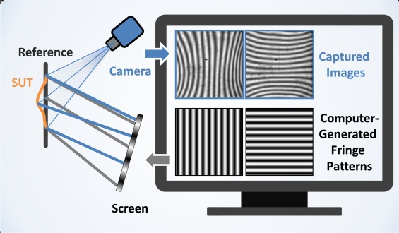
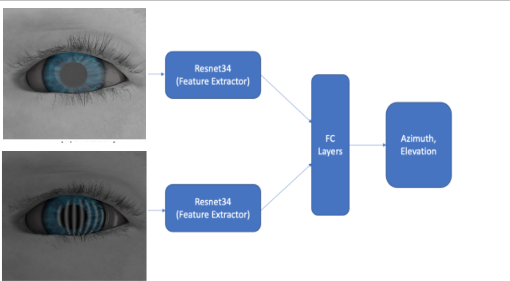
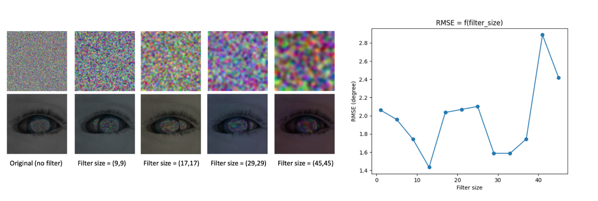
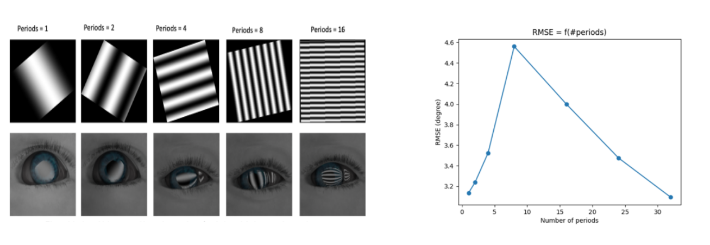
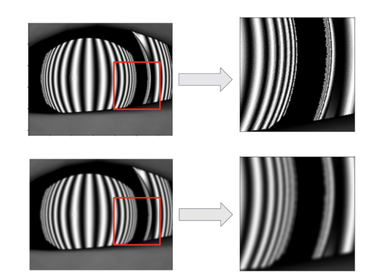
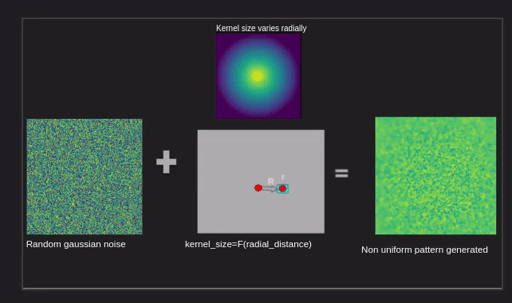
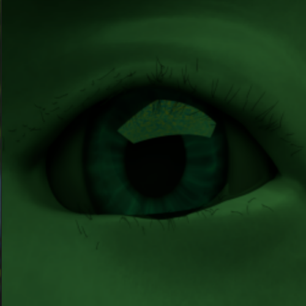

Deep Learning-Based Eye Gaze Estimation using Deflectometry Information in VR/AR/MR Headsets
The goal of the project is to enable faster and more precise eye gaze direction estimation in VR/AR/MR devices by exploiting the deflectometry information provided from the reflection of the screen pattern on the specular surface of the eye.
This is my final graduate project at Northwestern University. I was supervised by
- Professor Florian Willomitzer, and Oliver Cossairt, ECE/CS Department
- Nathan Matsuda, Ph.D., Facebook Reality Labs
- Professor Matthew Elwin, Deputy Director of the Master of Robotics Program
Motivation
The project aims to solve one of the current problems in Virtual, Augmented, or Mixed Reality Headsets: Accurate and fast eye tracking. Precise eye tracking in VR/AR/MR Headsets can help to significantly increase the viewing comfort by continuously keeping track of the inter-pupillary distance (IPD) of the viewer. This is important since changing the eye’s focus (accommodation) is in natural scenes directly connected to the vergence of the optical axes of both eyes(“accommodation-convergence reflex”).
Problem Statement:
High-quality gaze tracking requires sufficient 3D scene understanding since the vertex of the eye must be precisely tracked in three dimensions.This requires a precise and dense single-shot 3D measurement of the eye surface and a procedure to evaluate these measurement to calculate the gazing direction.
The principle of the normal measurement in deflectometry
The purpose of this project is to significantly increase the information content that is provided by corneal or scleral reflection to calculate the gazing direction.

The basic principle of Deflectometry: A screen that displays a known pattern replaces the point-like light source. In Deflectometry systems, the screen and camera face the object, which means that the camera observes the specular reflection of the screen over the object’s surface. The observed pattern in the camera image is a deformed version of the image on the screen, where the deformation depends on the surface normal distribution of the object surface. From this deformation, the normal vectors of the surface can be calculated.
Model Design: Swirski Eye
It is very crucial to have a model that captures realistic face geometry, including eyelids and eyebrows, that animates in response to the eye movements and different closeness settings. To create a realistic render of the eye, I used the model Swirski and Dodgson developed in their paper. Since the original Swirski model did not use an eyeball with the elevated cornea, I swapped the eyeball in the Swirski model and replaced it with my own eye model while keeping the face model. To load and animate the model I used Blender, which is a free and open-source 3D computer graphics software.

Architecture of the Double Frame Deflectometry Network
Goal: To learn the relationship between the screen pattern of a captured image and that of a reference image to estimate the gaze direction based on the deformation of the pattern due to the rotation of the eye.

I chose Double Frame Deflectometry Network(DFDN), to allow arbitrary screen patterns for the inputs. DFDN takes a pair of eye images, where one is an actual captured imag and the other is a synthesized eye image with preset rotation angles and the reflection of an arbitrary pattern(reference image). A reference image plays a role in providing the network with some information about the arbitrary pattern that is being reflected on the captured eye image.
Investigation of effects of various patterns on gaze estimation accuracy
Random pattern with various low pass filters

Sinusoids of different periods

Effect of Aliasing
These results are counter-intuitive and we hypothesize that this nonlinearity between frequency and accuracy may be due to a severe undersampling happening at the boundary of the cornea and sclera because of the abrupt change in curvature.

Pattern optimization
We concluded the following:
- The true relationship between the frequency of the pattern and the estimation accuracy may be nonlinear. There may be a sweet spot, or the ideal frequency, where the network can minimize the estimation error. (This is due to the presence of a sharp edge between cornea and sclera)
- The frequency might not be the exact property that is associated with accuracy.
The test various hypothesis on the properties of patterns that may affect the accuracy, and in the process we aim to find the optimal the pattern that yields the lowest error. In this process I focused on using algorithms to find the optimal pattern in two steps:
- To perform a course-level optimization to determine the shape of the function. This was achieved by using the genetic algorithm (which is mentioned in a different post) which eliminated some of the functions from the pool of hypothetical functions formed using a fitness function.
- To perform a fine-level optimization to fine-tune the constants. This was achieved by gradient descent optimization on L2 loss which was calculated on gazing direction values( azimuthal and elevation angle).  